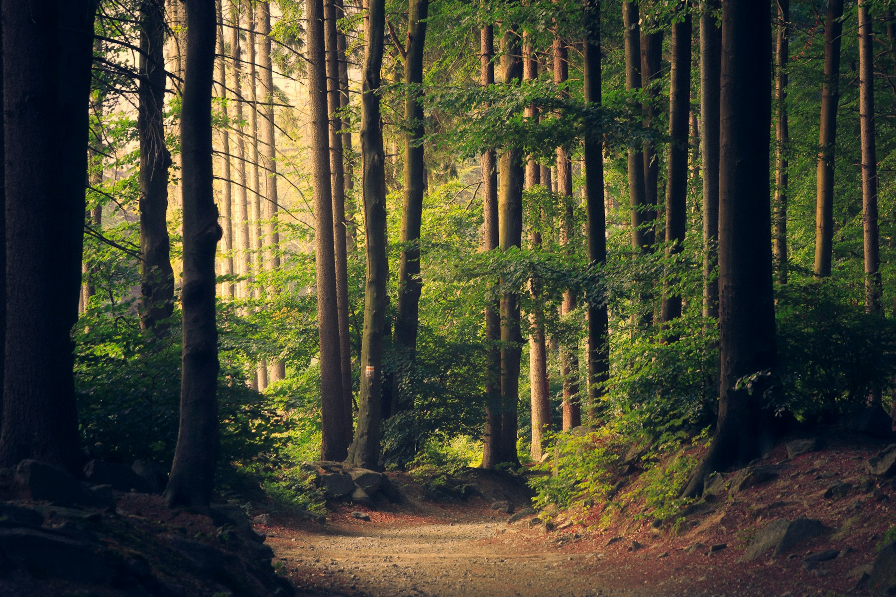
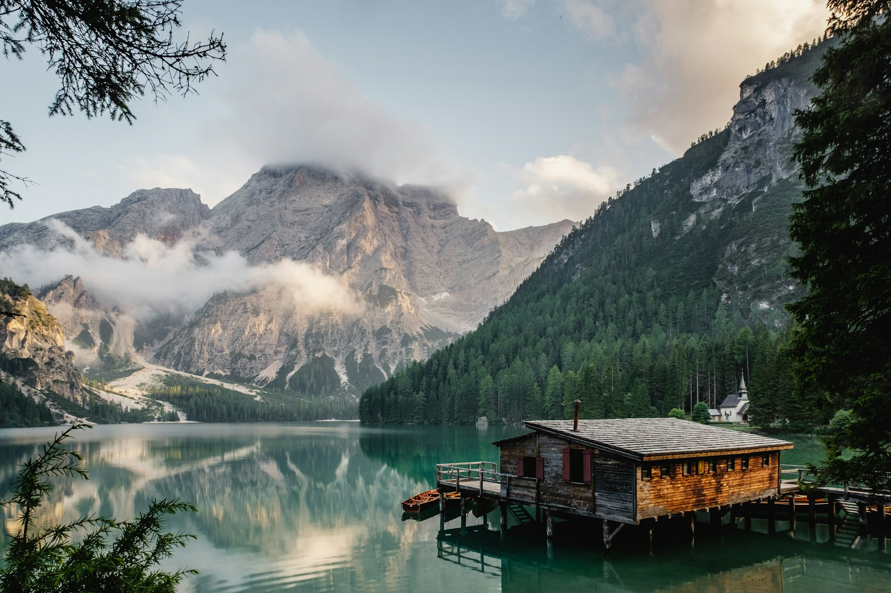
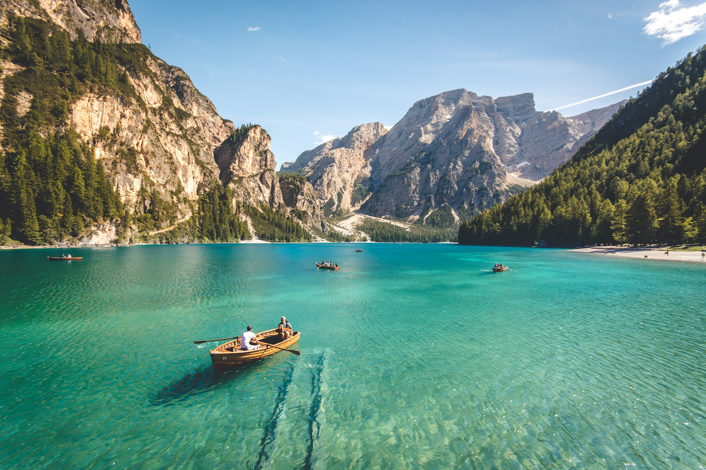
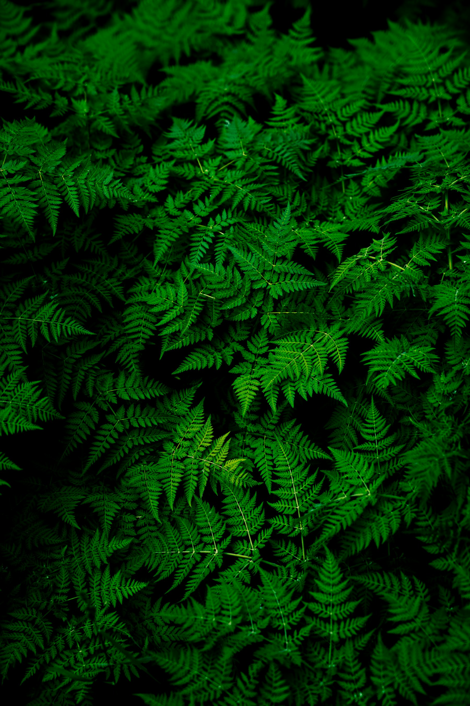

Nature & trails
TAKE THE
LONG WAY.
Woodland, meadow, water and open sky are stitched together by a network of clear, characterful trails.

Choose a route
THREE TRAILS.
NO WRONG TURN.
Moonrise Loop
A wide, accessible loop through meadow, wetland and a shaded stand of mature trees.
Willow Creek Walk
A quiet waterside route with timber overlooks and places to pause beneath the willows.

↗03Sunset Ridge
A rising path through open grassland, ending at the park’s broad western viewpoint.

↗
Tread lightly
THE PARK IS
A LIVING SYSTEM.
Stay on marked paths in sensitive areas, give wildlife space and leave what you find. Small choices keep the landscape healthy for everyone.